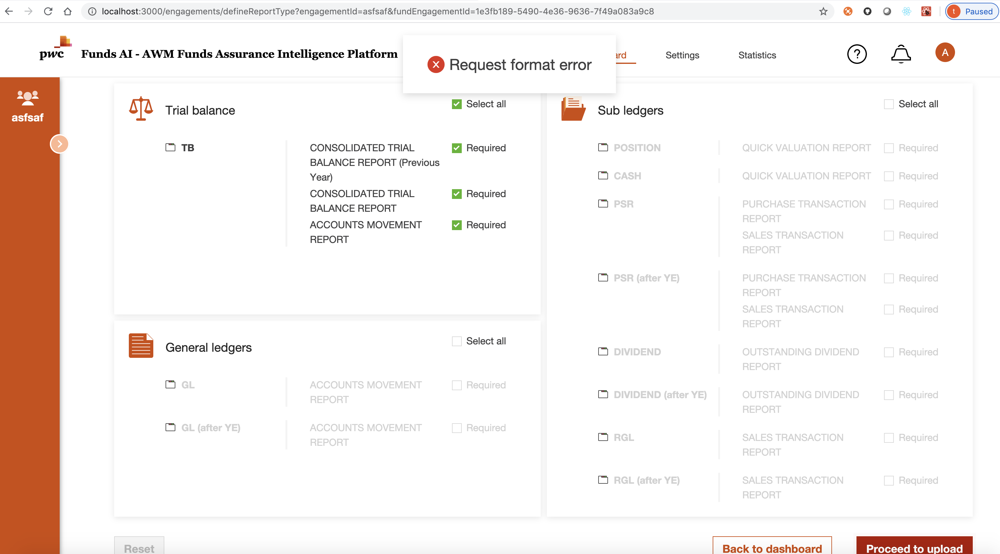
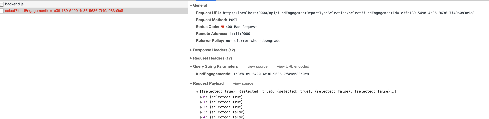
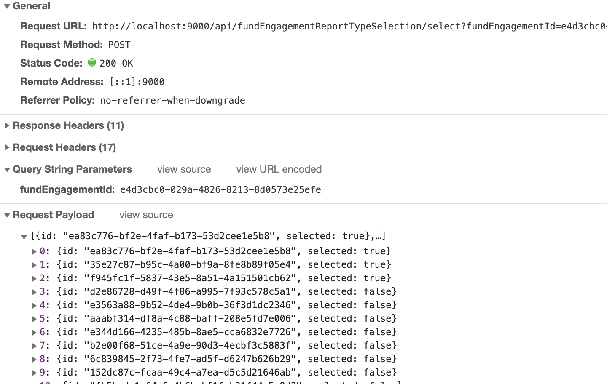
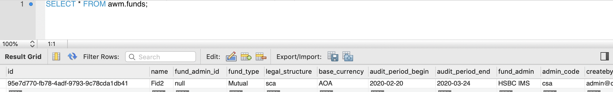

database null field error
User bug report
User report error when they want to define report types for fund in engagemnt:

When check the request in the network:

Compare with valid request in network:

We will find that id is missing in the payload.
Database check
Check the database:

It seems the fund_admin_id field is null, we fix this issue, then user could define report types now. But we check the production database, we will find the field will be set to null by application:
4:20:13 PM: mysql> SELECT id,fund_admin_id,fund_admin FROM awm.funds;
+--------------------------------------+---------------+-----------------+
| id | fund_admin_id | fund_admin |
+--------------------------------------+---------------+-----------------+
| 02635de9-97d8-4520-90f3-68a53e3d6518 | 1 | HSBC IMS |
| 03361d5c-531e-411f-8a57-e02eaffa81e7 | 1 | HSBC IMS |
| 8be5db7b-3358-4e3d-a572-839f2f765ed9 | 1 | HSBC IMS |
| 918bb23a-c5ff-4a91-a822-bf8f8416fadd | 1 | HSBC IMS |
| 930131cb-9c91-44b0-88e7-12460949dcae | 1 | HSBC IMS |
| 961c5a46-9a87-4084-ac0d-408c436522d8 | 1 | HSBC IMS |
| a6e44dc6-b72e-4b23-8d1d-b885c8561e83 | 2 | HSBC MultiFonds |
| b1109ece-7686-4efb-93d6-81e00356c736 | 1 | HSBC IMS |
| b8c1cb44-c60e-482c-9b7f-67abc6165a75 | 1 | HSBC IMS | ********
| be3de937-5c8a-45d7-8619-047a50785430 | 1 | HSBC IMS |
| cb4c2be3-78b4-4edb-b08f-11b66fb4ee1e | 1 | HSBC IMS |
| d2bbb0ec-50c1-44b6-8039-686daf8e137f | 1 | HSBC IMS |
| ebbae85a-52f1-4445-9dbb-79e6d2bd8db1 | 1 | HSBC IMS |
| f872f26e-21fe-4d12-b23e-baa0635d8ebf | 3 | HSBC Geneva |
| f9c9eb38-7a1c-43c0-9678-c4562594449b | 1 | HSBC IMS |
| fb488f25-d2e8-47d2-9090-6807c9960c01 | 1 | HSBC IMS |
| fbec119f-7e68-4cbc-905b-b40db35f0a2f | 1 | HSBC IMS |
+--------------------------------------+---------------+-----------------+
43 rows in set (0.00 sec)
5:38:27 PM: mysql> SELECT id,fund_admin_id,fund_admin FROM awm.funds;
+--------------------------------------+---------------+-----------------+
| id | fund_admin_id | fund_admin |
+--------------------------------------+---------------+-----------------+
| 02635de9-97d8-4520-90f3-68a53e3d6518 | 1 | HSBC IMS |
| 03361d5c-531e-411f-8a57-e02eaffa81e7 | 1 | HSBC IMS |
| 049d9aa4-2822-4bcd-8ec7-1b6bef3cd628 | 1 | HSBC IMS |
| 0a1938df-a03a-45c8-8c3a-86e4bd52d92c | 1 | HSBC IMS |
| 961c5a46-9a87-4084-ac0d-408c436522d8 | 1 | HSBC IMS |
| a6e44dc6-b72e-4b23-8d1d-b885c8561e83 | 2 | HSBC MultiFonds |
| b1109ece-7686-4efb-93d6-81e00356c736 | 1 | HSBC IMS |
| b42ab859-ff5a-4fe0-b283-fe0c98c88392 | 1 | HSBC IMS |
| b8c1cb44-c60e-482c-9b7f-67abc6165a75 | NULL | HSBC IMS | ********
| be3de937-5c8a-45d7-8619-047a50785430 | 1 | HSBC IMS |
| cb4c2be3-78b4-4edb-b08f-11b66fb4ee1e | 1 | HSBC IMS |
| d2bbb0ec-50c1-44b6-8039-686daf8e137f | 1 | HSBC IMS |
| ebbae85a-52f1-4445-9dbb-79e6d2bd8db1 | 1 | HSBC IMS |
| f872f26e-21fe-4d12-b23e-baa0635d8ebf | 3 | HSBC Geneva |
| f9c9eb38-7a1c-43c0-9678-c4562594449b | 1 | HSBC IMS |
| fb488f25-d2e8-47d2-9090-6807c9960c01 | 1 | HSBC IMS |
| fbec119f-7e68-4cbc-905b-b40db35f0a2f | 1 | HSBC IMS |
+--------------------------------------+---------------+-----------------+
44 rows in set (0.00 sec)
Database define
The database define as below:
The source code for this page can be found here.